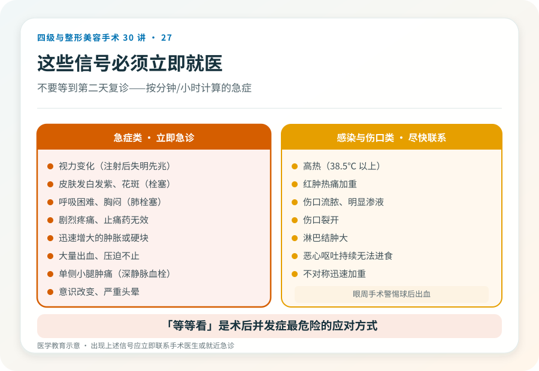
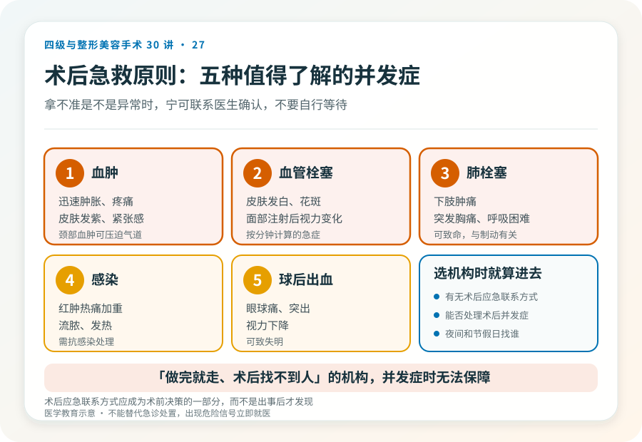

先说结论：整形术后多数肿胀、疼痛、淤青是正常愈合过程，但有些信号提示并发症，必须立即就医，不能“等等看”。剧烈且持续加重的疼痛、迅速增大的肿胀、发热、皮肤发白发紫、视力变化、呼吸困难、伤口流脓或大量出血，都属于需要紧急处理的信号。了解正常反应和危险信号的边界，是术后安全的关键。
先理解正常的术后反应
不同手术的正常术后反应不同，但通常包括：
- 肿胀：术后 48–72 小时达高峰，之后逐渐消退。面部手术肿胀可能明显。
- 疼痛：可控的疼痛，随时间减轻，可通过止痛药缓解。
- 淤青：随时间从紫红变黄绿，逐渐吸收。
- 轻度发热：术后 24–48 小时内的吸收热通常不高。
- 轻度不适、疲倦。
这些通常随时间改善，不会持续加重。“随时间改善”是判断正常与异常的核心线索。
必须立即就医的危险信号
以下信号提示可能的并发症，需要立即联系医生或急诊，不要等到第二天复诊：
- 剧烈疼痛：止痛药无法缓解、持续加重的疼痛，尤其伴局部明显肿胀，提示血肿或血管问题。
- 皮肤颜色改变：皮肤发白、发紫、花斑样变色、冰凉，提示血供问题；尤其注射或术后早期，可能为血管栓塞，需紧急处理。
- 视力变化：眼周或鼻部注射后出现视力模糊、失明、眼痛、头痛，是血管栓塞最危险的信号，必须立即急诊。
- 迅速增大的肿胀或硬块：提示活动性出血或血肿。
- 高热：明显发热（通常 38.5℃ 以上）伴红肿热痛，提示感染。
- 伤口流脓、明显渗液、裂开。
- 大量出血：敷料持续渗血、压迫不止。
- 呼吸困难、胸闷：提示肺栓塞、过敏反应或气道问题，是急症。
- 单侧肢体肿胀、小腿疼痛：提示深静脉血栓。
- 恶心呕吐持续、无法进食饮水。
- 意识改变、严重头晕。
- 不对称迅速加重（如一侧明显肿胀、眼球突出）：眼周手术尤其警惕球后出血。
几种值得专门了解的并发症
血肿：术后出血积聚形成。表现为迅速肿胀、疼痛、紧张感、皮肤发紫。较大血肿可能需要手术清除，颈部血肿还可能压迫气道，是急症。
感染：红肿热痛加重、流脓、发热、淋巴结肿大。需要抗感染处理，严重者可能需要取出植入物或引流。
血管栓塞（注射或术后）：皮肤发白、花斑、剧痛、组织缺血；面部注射后视力变化是失明先兆。这是按分钟计算的急症。
深静脉血栓和肺栓塞：下肢肿胀疼痛、突发胸痛、呼吸困难、咳血。与制动、手术范围有关，肺栓塞可致命。
球后出血（眼周手术）：眼球疼痛、突出、视力下降、明显不对称肿胀，可致失明，需紧急处理。
术后该做的事
- 保留医生/机构的紧急联系方式，了解术后什么情况联系谁、夜间和周末找谁。
- 按医嘱复诊，不擅自提前或推迟。
- 保留术前术后照片和病历，便于后续判断。
- 避免剧烈活动、热敷、饮酒、阿司匹林类（未经医嘱），按医嘱护理伤口。
- 如实向医生报告症状，不因担心“打扰”而隐瞒。
“等等看”是最危险的应对
很多人术后出现异常信号时，倾向于“再观察一晚”“可能是正常的”。对于血管栓塞、血肿压迫气道、肺栓塞这类按时间计算的急症，“等等看”可能造成不可逆后果。判断原则是：拿不准是不是异常、且症状明显或持续加重时，宁可联系医生确认，也不要自行等待。好的医生和机构会认真对待术后反馈，而不是嫌你“大惊小怪”。
选机构时就把“术后应急”算进去
术后并发症可能在夜间、周末或回家后出现。选择手术机构时，就应确认它有无术后应急联系方式、能不能处理术后并发症、夜间和节假日找谁。一家“做完就走、术后找不到人”的机构，在并发症发生时无法提供保障。这应当成为术前决策的一部分，而不是出事后才发现的问题。
本文用于健康教育，不能替代急诊处置；术后出现上述危险信号应立即联系手术医生或就近急诊。